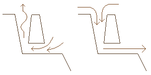

British caves without through-flows of air tend to keep a reasonably stable temperature at around 7oC. (~45oF). In caves with airflow this is more complex*, but they are usually around this temperature. What this means is that during the winter, caves are often warmer than the air above ground and in the summer they can be a good deal cooler.
Imagine the situation where we have a cave with both a lower and upper entrance, as in the diagrams below. In the winter warm air can rise out of the cave top and is replaced by colder air which, being denser, usually sits around the lower entrance waiting to be dragged in. This is known as "The Chimney Effect" as it is seen in chimneys which feed fires with oxygen by encouraging exactly this circulation. In the cave in summer, the colder air in the cave can run out of the bottom of the cave system, being replaced by warmer air drawn in from above.
Left) Warm air rises from the cave
during the winter, and is replaced by colder air, which is drawn into the system.
Right) In the Summer, the air in the cave is cooler than the outside air, and it rolls
out of the lower entrance, pulling in warm air from above.